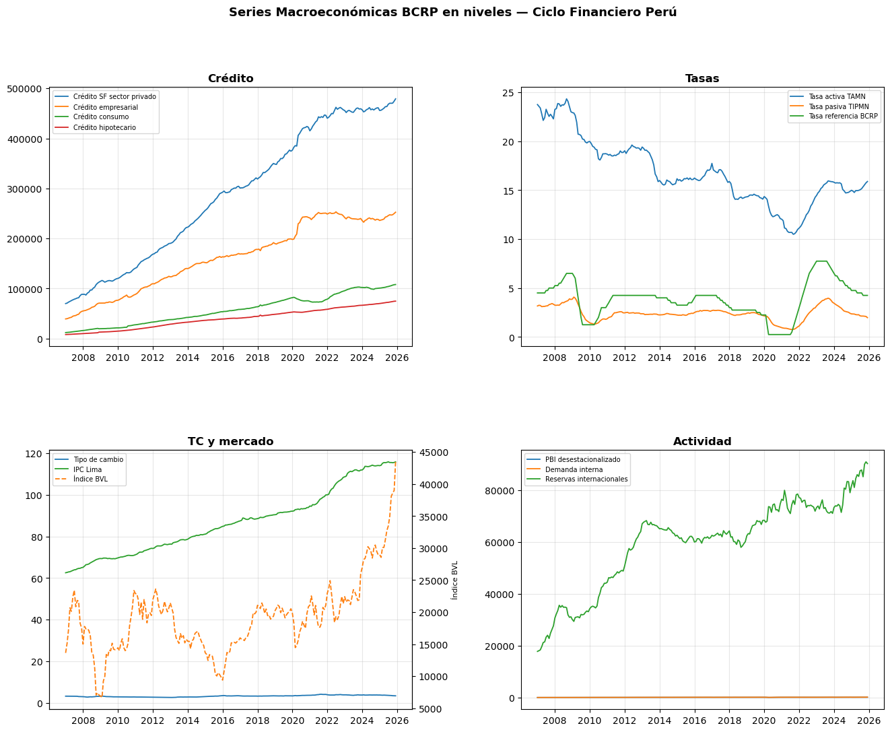
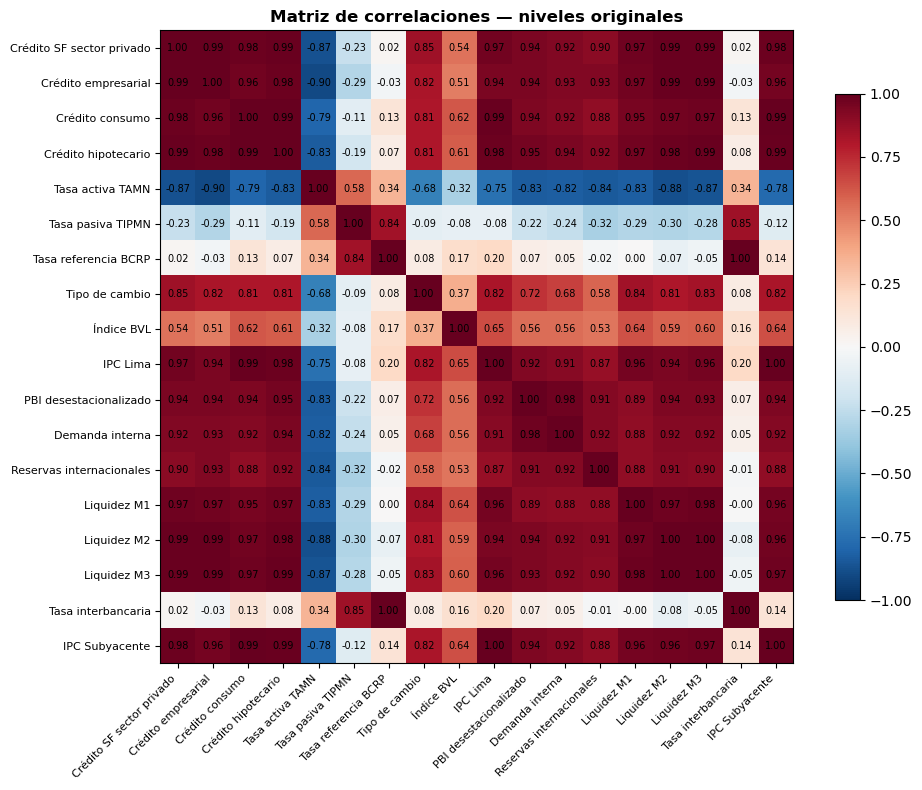

03 · Análisis Exploratorio (series en niveles, sin transformar)
Tesis: Medición del ciclo financiero en Perú Autor: Roberto Samaniego | Asesor: Dr. Sergio Camiz
Responsabilidad única de este notebook: visualizar las series y su estructura de correlación en niveles, tal como están en data/raw/, antes de aplicar cualquier transformación de estacionariedad o estandarización.
Esto le permite a tu asesor ver primero el comportamiento crudo de los datos. Cualquier dropna() usado aquí es local al cálculo de una figura (p. ej. la matriz de correlación necesita casos completos) y no se guarda como un nuevo dataset ni sobrescribe df_raw.
1. Librerías y carga de datos verificados
import osos.chdir(os.path.expanduser('~/Documents/tesis-ciclo-financiero-peru'))print(os.getcwd())import pandas as pdimport matplotlib.pyplot as pltimport numpy as npimport matplotlib.gridspec as gridspecimport warningswarnings.filterwarnings('ignore')df_raw = pd.read_csv('data/raw/series_bcrp_raw.csv', index_col=0, parse_dates=True)print(f'Dataset: {df_raw.shape[0]} filas x {df_raw.shape[1]} columnas (niveles originales)')
/Users/robert/Documents/tesis-ciclo-financiero-peru
Dataset: 228 filas x 18 columnas (niveles originales)
fig = plt.figure(figsize=(16, 12))fig.suptitle('Series Macroeconómicas BCRP en niveles — Ciclo Financiero Perú', fontsize=13, fontweight='bold', y=0.98)gs = gridspec.GridSpec(2, 2, figure=fig, hspace=0.4, wspace=0.3)# Bloque 'TC y mercado': el Índice BVL tiene una escala muy distinta# (decenas de miles de puntos) a Tipo de cambio e IPC Lima (unidades/cientos).# Se usa un eje Y secundario solo para visualización -- no modifica los datos.for idx, (bloque, nombres) inenumerate(BLOQUES.items()): ax = fig.add_subplot(gs[idx //2, idx %2])if bloque =='TC y mercado': ax2 = ax.twinx()for i, nombre inenumerate(nombres):if nombre notin df_raw.columns:continueif nombre =='Índice BVL': ax2.plot(df_raw.index, df_raw[nombre], label=nombre, color=colores[i %len(colores)], linewidth=1.3, linestyle='--') ax2.set_ylabel('Índice BVL', fontsize=8)else: ax.plot(df_raw.index, df_raw[nombre], label=nombre, color=colores[i %len(colores)], linewidth=1.3) lineas1, etiquetas1 = ax.get_legend_handles_labels() lineas2, etiquetas2 = ax2.get_legend_handles_labels() ax.legend(lineas1 + lineas2, etiquetas1 + etiquetas2, fontsize=7, loc='upper left')else:for i, nombre inenumerate(nombres):if nombre in df_raw.columns: ax.plot(df_raw.index, df_raw[nombre], label=nombre, color=colores[i %len(colores)], linewidth=1.3) ax.legend(fontsize=7) ax.set_title(bloque, fontweight='bold') ax.grid(True, alpha=0.3)os.makedirs('reports/figures', exist_ok=True)plt.savefig('reports/figures/03_series_niveles_bcrp.png', dpi=150, bbox_inches='tight')print('Guardado en reports/figures/03_series_niveles_bcrp_juntos.png')plt.show()
Guardado en reports/figures/03_series_niveles_bcrp_juntos.png

4. Matriz de correlaciones (niveles, casos completos)
El dropna() de esta celda es transitorio: se usa solo para calcular la correlación (que requiere casos completos) y no se reasigna a df_raw ni se guarda como archivo nuevo.
df_para_corr = df_raw.dropna() # transitorio, solo para esta figuracorr = df_para_corr.corr()fig, ax = plt.subplots(figsize=(10, 8))im = ax.imshow(corr.values, cmap='RdBu_r', vmin=-1, vmax=1)ax.set_xticks(range(len(corr.columns)))ax.set_yticks(range(len(corr.columns)))ax.set_xticklabels(corr.columns, rotation=45, ha='right', fontsize=8)ax.set_yticklabels(corr.columns, fontsize=8)for i inrange(len(corr)):for j inrange(len(corr)): ax.text(j, i, f'{corr.values[i,j]:.2f}', ha='center', va='center', fontsize=7)plt.colorbar(im, ax=ax, shrink=0.8)ax.set_title('Matriz de correlaciones — niveles originales', fontsize=12, fontweight='bold')plt.tight_layout()plt.savefig('reports/figures/03_correlaciones_niveles_bcrp.png', dpi=150, bbox_inches='tight')print('Guardado en reports/figures/03_correlaciones_niveles_bcrp.png')print(f'\nObservación: n={len(df_para_corr)} casos completos usados solo para esta figura.')plt.show()
Guardado en reports/figures/03_correlaciones_niveles_bcrp.png
Observación: n=228 casos completos usados solo para esta figura.

Nota metodológica
Este análisis exploratorio trabaja siempre sobre niveles originales. Las transformaciones para estacionariedad (logaritmo, diferencias) y la estandarización se realizan en 04_preprocesamiento.ipynb, que es la única etapa donde el dataset cambia de forma.
# Un subplot por serie (no agrupadas por bloque) -- así cada una usa su propia# escala automática y ninguna se oculta por diferencias de magnitud# (crédito en miles de millones, tasas en %, tipo de cambio ~3-4, índices ~100,# reservas en miles de millones de US$, etc.)series_a_graficar =list(df_raw.columns)n_series =len(series_a_graficar)n_cols =3n_rows =int(np.ceil(n_series / n_cols))fig, axes = plt.subplots(n_rows, n_cols, figsize=(15, 3.2* n_rows))fig.suptitle('Series Macroeconómicas BCRP en niveles — Ciclo Financiero Perú', fontsize=13, fontweight='bold', y=1.01)axes = axes.flatten()for i, nombre inenumerate(series_a_graficar): axes[i].plot(df_raw.index, df_raw[nombre], color='#1f77b4', linewidth=1.2) axes[i].set_title(nombre, fontsize=9) axes[i].grid(True, alpha=0.3) axes[i].tick_params(axis='x', labelsize=7) axes[i].tick_params(axis='y', labelsize=7)# ocultar subplots vacíos si el número de series no llena la grilla completafor j inrange(n_series, len(axes)): axes[j].set_visible(False)plt.tight_layout()os.makedirs('reports/figures', exist_ok=True)plt.savefig('reports/figures/03_series_niveles_bcrp.png', dpi=150, bbox_inches='tight')print('Guardado en reports/figures/03_series_niveles_bcrp_individuales.png')plt.show()
Guardado en reports/figures/03_series_niveles_bcrp_individuales.png